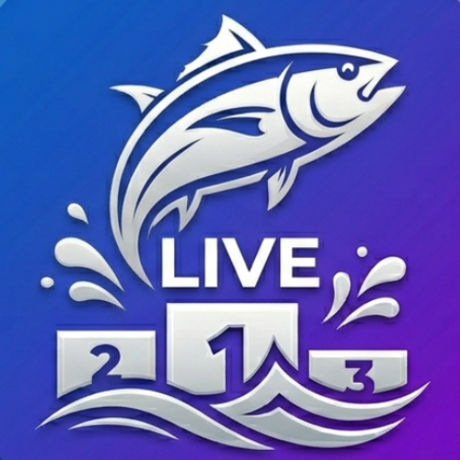

Official Scottish Species Scorer
Real-time catch updates with professional broadcast animations.
Smart-categorized lists including Minis, Wrasse, and Sharks.
Supports Length, Points, Weight, and Species Hunt rules.
Installation Guide
1. Tap the **Share** icon in Safari.
2. Scroll down and tap **'Add to Home Screen'**.
1. Tap the **Menu** in Chrome.
2. Tap **'Install App'** or **'Add to Home Screen'**.